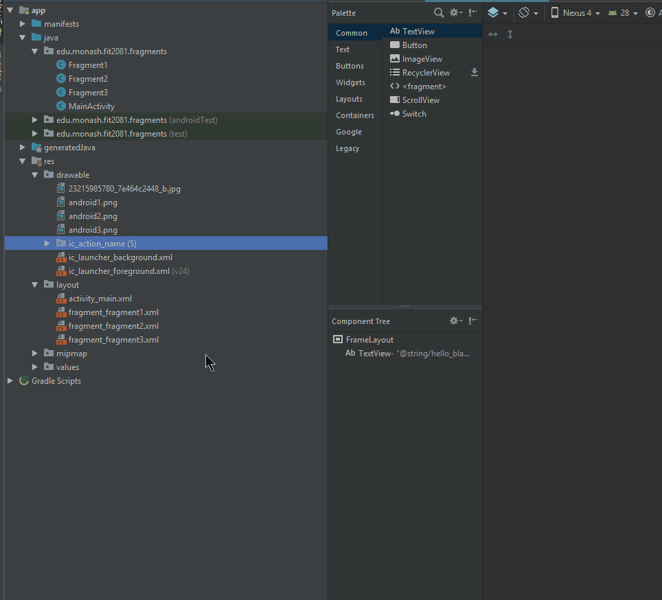
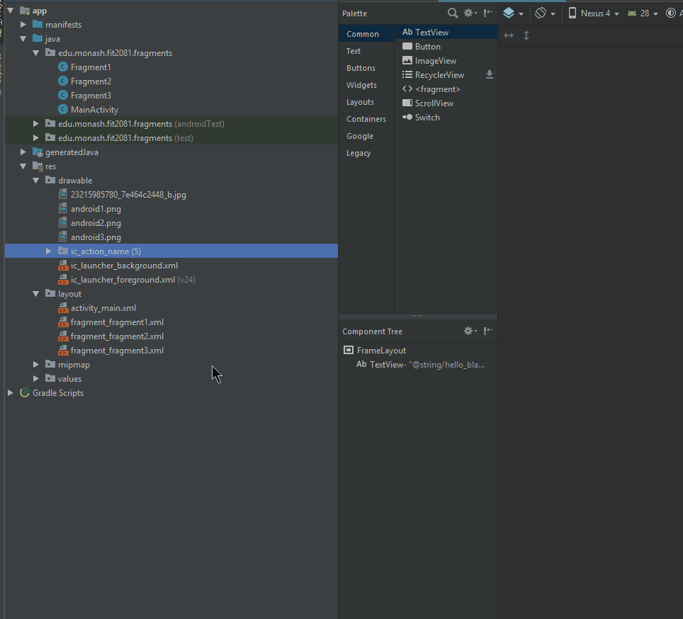
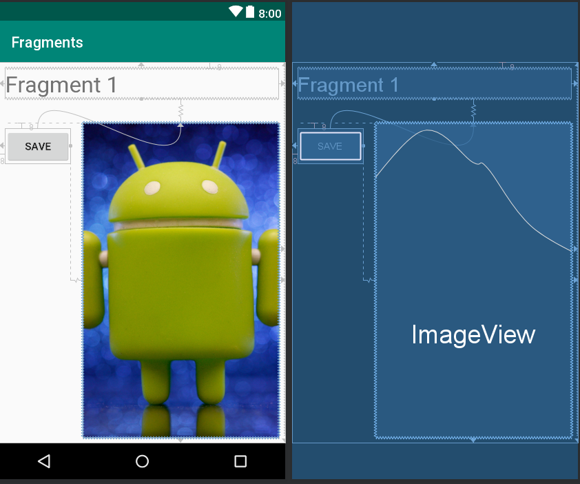
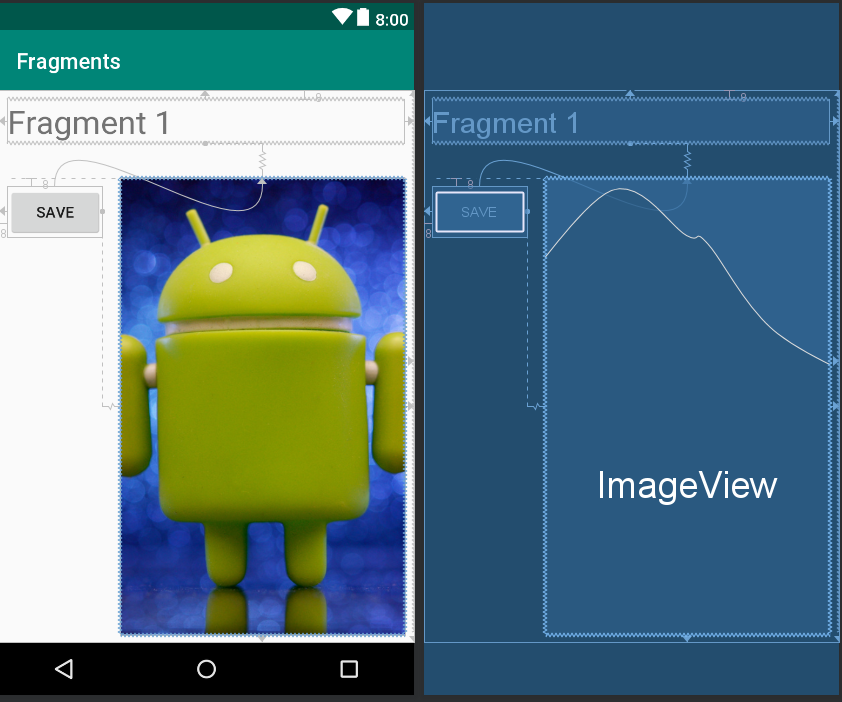
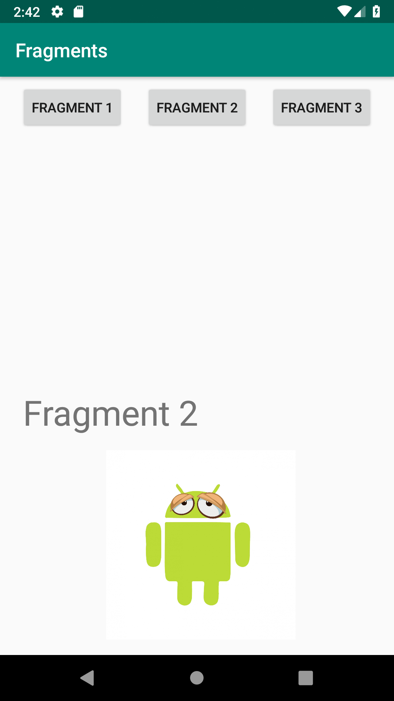
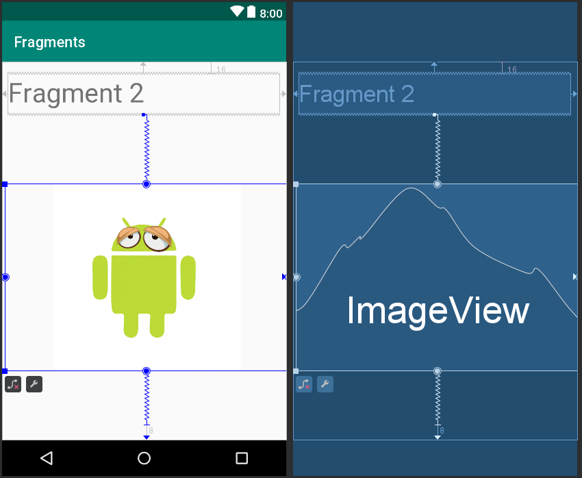
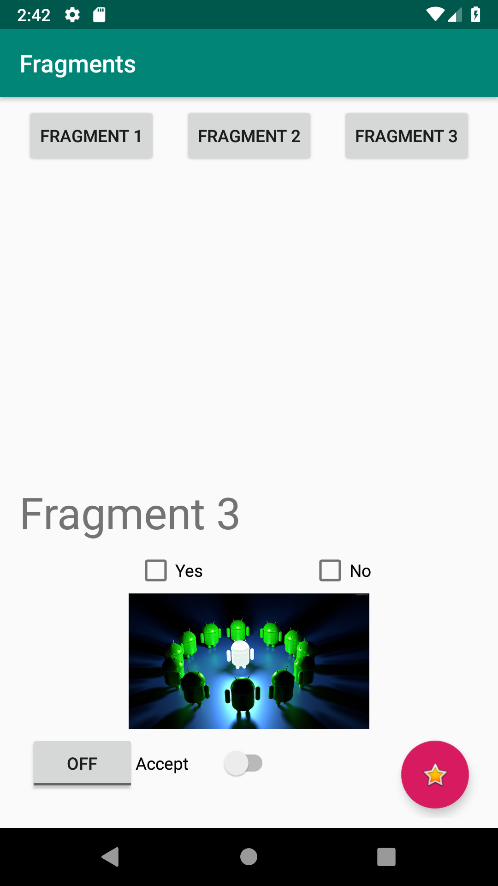

Question: I want to have an activity with two tasks such that they have different layouts (XML), different logic (Java), and can be reused in other activities.
Answer: You have to use Fragments.
What are Fragments?
A Fragment represents a behaviour or a portion of user interface in a FragmentActivity. You can combine multiple fragments in a single activity to build a multi-pane UI and reuse a fragment in multiple activities. You can think of a fragment as a modular section of an activity, which has its own lifecycle, receives its own input events, and which you can add or remove while the activity is running (sort of like a "subactivity" that you can reuse in different activities). [1]
What are the differences between Fragments and Activities?
- Activity is an application component that represents a full screen. A fragment is a portion of user interface in an activity.
- An activity may contain 0 or multiple fragments.
- Fragments can be reused in multiple activities.
- A fragment can't exist independently. It should be always part of an activity.
- A fragment can be added or removed while the activity (the host) is running.
- A fragment has its own lifecycle events.
Fragment Life Cycle
 onAttach()
Called when the fragment has been associated with the activity (the Activity is passed in here)
onCreate()
The system calls this when creating the fragment. Within your implementation, you should initialize essential components of the fragment that you want to retain when the fragment is paused or stopped, then resumed.
onCreateView()
The system calls this when it's time for the fragment to draw its user interface for the first time. To draw a UI for your fragment, you must return a View from this method that is the root of your fragment's layout. You can return null if the fragment does not provide a UI.
onActivityCreated()
Called when the activity's onCreate() method has returned.
onStart()
This method is called once the fragment gets visible.
onPause()
The system calls this method as the first indication that the user is leaving the fragment (though it doesn't always mean the fragment is being destroyed). This is usually where you should commit any changes that should be persisted beyond the current user session (because the user might not come back).
onDestroyView()
Called when the view hierarchy associated with the fragment is being removed.
onDetach()
Called when the fragment is being disassociated from the activity.
onAttach()
Called when the fragment has been associated with the activity (the Activity is passed in here)
onCreate()
The system calls this when creating the fragment. Within your implementation, you should initialize essential components of the fragment that you want to retain when the fragment is paused or stopped, then resumed.
onCreateView()
The system calls this when it's time for the fragment to draw its user interface for the first time. To draw a UI for your fragment, you must return a View from this method that is the root of your fragment's layout. You can return null if the fragment does not provide a UI.
onActivityCreated()
Called when the activity's onCreate() method has returned.
onStart()
This method is called once the fragment gets visible.
onPause()
The system calls this method as the first indication that the user is leaving the fragment (though it doesn't always mean the fragment is being destroyed). This is usually where you should commit any changes that should be persisted beyond the current user session (because the user might not come back).
onDestroyView()
Called when the view hierarchy associated with the fragment is being removed.
onDetach()
Called when the fragment is being disassociated from the activity.
Example: Build an application that consists of one activity and three fragments. The activity should have three buttons which are used to switch the fragments. Each fragment has its own layout and logic.
App source code: CLICK HERE
The layout of the activity:
 activity_main.xml
activity_main.xml
<?xml version="1.0" encoding="utf-8"?>
<android.support.constraint.ConstraintLayout
xmlns:android="http://schemas.android.com/apk/res/android"
xmlns:app="http://schemas.android.com/apk/res-auto"
xmlns:tools="http://schemas.android.com/tools"
android:layout_width="match_parent"
android:layout_height="match_parent"
tools:context=".MainActivity">
<Button
android:id="@+id/button"
android:layout_width="wrap_content"
android:layout_height="wrap_content"
android:onClick="handleBtn1"
android:text="Fragment 1"
app:layout_constraintBaseline_toBaselineOf="@+id/button2"
app:layout_constraintEnd_toStartOf="@+id/button2"
app:layout_constraintHorizontal_bias="0.5"
app:layout_constraintHorizontal_chainStyle="spread"
app:layout_constraintStart_toStartOf="parent"/>
<Button
android:id="@+id/button2"
android:layout_width="wrap_content"
android:layout_height="wrap_content"
android:layout_marginTop="8dp"
android:onClick="handleBtn2"
android:text="Fragment 2"
app:layout_constraintEnd_toStartOf="@+id/button3"
app:layout_constraintHorizontal_bias="0.5"
app:layout_constraintStart_toEndOf="@+id/button"
app:layout_constraintTop_toTopOf="parent"/>
<Button
android:id="@+id/button3"
android:layout_width="wrap_content"
android:layout_height="wrap_content"
android:layout_marginTop="8dp"
android:onClick="handleBtn3"
android:text="Fragment 3"
app:layout_constraintEnd_toEndOf="parent"
app:layout_constraintHorizontal_bias="0.5"
app:layout_constraintStart_toEndOf="@+id/button2"
app:layout_constraintTop_toTopOf="parent"/>
<FrameLayout
android:id="@+id/frag1"
android:layout_width="0dp"
android:layout_height="0dp"
android:layout_marginStart="16dp"
android:layout_marginTop="8dp"
android:layout_marginEnd="16dp"
android:layout_marginBottom="8dp"
app:layout_constraintBottom_toBottomOf="parent"
app:layout_constraintEnd_toEndOf="parent"
app:layout_constraintHorizontal_bias="0.0"
app:layout_constraintStart_toStartOf="parent"
app:layout_constraintTop_toTopOf="@+id/guideline"></FrameLayout>
<android.support.constraint.Guideline
android:id="@+id/guideline"
android:layout_width="wrap_content"
android:layout_height="wrap_content"
android:orientation="horizontal"
app:layout_constraintGuide_percent="0.5"/>
</android.support.constraint.ConstraintLayout>
IMPORTANT: The framelayout in lines (46-58) with its id R.id.frag1Â works as a container for the fragments.
and the design mode:

Note the following:
- The three buttons have been chained to expand equally to fill the available space.
- There is a Horizontal Guideline that is positioned at the center (50%) of the hight.
- The box at the lower half is a frame layoutr that works as a container for the fragments.
Now, lets add a new fragment:
 by default, the layout of new fragments is framelayout. To change it to constraint layout:

Now, build the layouts of your fragments:
Fragment 1:
If a click(tap) occurs on the first button (FRAGMENT 1), the expected output is:
by default, the layout of new fragments is framelayout. To change it to constraint layout:

Now, build the layouts of your fragments:
Fragment 1:
If a click(tap) occurs on the first button (FRAGMENT 1), the expected output is:
 and here is the design:

fragment1.xml
and here is the design:

fragment1.xml
<?xml version="1.0" encoding="utf-8"?>
<android.support.constraint.ConstraintLayout xmlns:android="http://schemas.android.com/apk/res/android"
xmlns:app="http://schemas.android.com/apk/res-auto"
xmlns:tools="http://schemas.android.com/tools"
android:id="@+id/frameLayout"
android:layout_width="match_parent"
android:layout_height="match_parent"
tools:context=".Fragment1">
<!-- TODO: Update blank fragment layout -->
<TextView
android:id="@+id/textView"
android:layout_width="0dp"
android:layout_height="0dp"
android:layout_marginBottom="8dp"
app:layout_constraintBottom_toBottomOf="parent"
app:layout_constraintEnd_toEndOf="parent"
app:layout_constraintTop_toTopOf="parent"/>
<Button
android:id="@+id/button4"
android:layout_width="wrap_content"
android:layout_height="wrap_content"
android:layout_marginStart="8dp"
android:layout_marginTop="8dp"
android:text="Save"
app:layout_constraintStart_toStartOf="parent"
app:layout_constraintTop_toTopOf="@+id/imageView"/>
<TextView
android:id="@+id/textView2"
android:layout_width="0dp"
android:layout_height="wrap_content"
android:layout_marginStart="8dp"
android:layout_marginTop="8dp"
android:layout_marginEnd="8dp"
android:text="Fragment 1"
android:textSize="30sp"
app:layout_constraintEnd_toEndOf="parent"
app:layout_constraintStart_toStartOf="parent"
app:layout_constraintTop_toTopOf="parent"/>
<ImageView
android:id="@+id/imageView"
android:layout_width="0dp"
android:layout_height="0dp"
android:layout_marginStart="16dp"
android:layout_marginTop="32dp"
android:layout_marginEnd="8dp"
android:layout_marginBottom="8dp"
android:scaleType="centerCrop"
android:src="@drawable/android1"
app:layout_constraintBottom_toBottomOf="parent"
app:layout_constraintEnd_toEndOf="parent"
app:layout_constraintStart_toEndOf="@+id/button4"
app:layout_constraintTop_toBottomOf="@+id/textView2"/>
</android.support.constraint.ConstraintLayout>
Fragment 2:

fragment2.xml
<?xml version="1.0" encoding="utf-8"?>
<android.support.constraint.ConstraintLayout xmlns:android="http://schemas.android.com/apk/res/android"
xmlns:app="http://schemas.android.com/apk/res-auto"
xmlns:tools="http://schemas.android.com/tools"
android:id="@+id/frameLayout2"
android:layout_width="match_parent"
android:layout_height="match_parent"
tools:context=".Fragment2">
<!-- TODO: Update blank fragment layout -->
<TextView
android:id="@+id/textView3"
android:layout_width="0dp"
android:layout_height="56dp"
android:layout_marginStart="8dp"
android:layout_marginTop="16dp"
android:layout_marginEnd="8dp"
android:text="Fragment 2"
android:textSize="36sp"
app:layout_constraintEnd_toEndOf="parent"
app:layout_constraintHorizontal_bias="1.0"
app:layout_constraintStart_toStartOf="parent"
app:layout_constraintTop_toTopOf="parent"/>
<ImageView
android:id="@+id/imageView2"
android:layout_width="wrap_content"
android:layout_height="0dp"
android:layout_marginStart="8dp"
android:layout_marginTop="8dp"
android:layout_marginBottom="8dp"
android:src="@drawable/android2"
app:layout_constraintBottom_toBottomOf="parent"
app:layout_constraintEnd_toEndOf="parent"
app:layout_constraintStart_toStartOf="parent"
app:layout_constraintTop_toBottomOf="@+id/textView3"/>
</android.support.constraint.ConstraintLayout>

Fragment 3:

fragment3.xml
<?xml version="1.0" encoding="utf-8"?>
<android.support.constraint.ConstraintLayout xmlns:android="http://schemas.android.com/apk/res/android"
xmlns:app="http://schemas.android.com/apk/res-auto"
xmlns:tools="http://schemas.android.com/tools"
android:id="@+id/fragmentLayout3"
android:layout_width="match_parent"
android:layout_height="match_parent"
tools:context=".Fragment3">
<!-- TODO: Update blank fragment layout -->
<TextView
android:id="@+id/textView4"
android:layout_width="0dp"
android:layout_height="wrap_content"
android:layout_marginBottom="8dp"
android:text="Fragment 3"
android:textSize="36sp"
app:layout_constraintBottom_toTopOf="@+id/checkBox2"
app:layout_constraintEnd_toEndOf="parent"
app:layout_constraintHorizontal_bias="0.0"
app:layout_constraintStart_toStartOf="parent"/>
<ImageView
android:id="@+id/imageView3"
android:layout_width="wrap_content"
android:layout_height="112dp"
android:layout_marginBottom="4dp"
android:src="@drawable/android3"
app:layout_constraintBottom_toTopOf="@+id/toggleButton2"
app:layout_constraintEnd_toEndOf="parent"
app:layout_constraintHorizontal_bias="1.0"
app:layout_constraintStart_toStartOf="parent"
/>
<CheckBox
android:id="@+id/checkBox"
android:layout_width="wrap_content"
android:layout_height="wrap_content"
android:layout_marginStart="8dp"
android:text="Yes"
app:layout_constraintBaseline_toBaselineOf="@+id/checkBox2"
app:layout_constraintEnd_toStartOf="@+id/checkBox2"
app:layout_constraintHorizontal_bias="0.5"
app:layout_constraintStart_toStartOf="parent"/>
<CheckBox
android:id="@+id/checkBox2"
android:layout_width="wrap_content"
android:layout_height="wrap_content"
android:layout_marginBottom="3dp"
android:text="No"
app:layout_constraintBottom_toTopOf="@+id/imageView3"
app:layout_constraintEnd_toEndOf="parent"
app:layout_constraintHorizontal_bias="0.5"
app:layout_constraintStart_toEndOf="@+id/checkBox"
/>
<ToggleButton
android:id="@+id/toggleButton2"
android:layout_width="wrap_content"
android:layout_height="wrap_content"
android:layout_marginStart="8dp"
android:text="ToggleButton"
app:layout_constraintBaseline_toBaselineOf="@+id/switch1"
app:layout_constraintStart_toStartOf="parent"/>
<Switch
android:id="@+id/switch1"
android:layout_width="116dp"
android:layout_height="wrap_content"
android:layout_marginBottom="32dp"
android:text="Accept"
app:layout_constraintBottom_toBottomOf="parent"
app:layout_constraintStart_toEndOf="@+id/toggleButton2"
/>
<android.support.design.widget.FloatingActionButton
android:id="@+id/floatingActionButton"
android:layout_width="wrap_content"
android:layout_height="wrap_content"
android:layout_marginEnd="8dp"
android:layout_marginBottom="8dp"
android:clickable="true"
android:src="@android:drawable/btn_star_big_on"
app:layout_constraintBottom_toBottomOf="parent"
app:layout_constraintEnd_toEndOf="parent"/>
</android.support.constraint.ConstraintLayout>

MainActivity.java
package edu.monash.fit2081.fragments;
import android.support.v7.app.AppCompatActivity;
import android.os.Bundle;
import android.view.View;
public class MainActivity extends AppCompatActivity {
@Override
protected void onCreate(Bundle savedInstanceState) {
super.onCreate(savedInstanceState);
setContentView(R.layout.activity_main);
}
public void handleBtn1(View view){
getSupportFragmentManager().beginTransaction().replace(R.id.frag1,new Fragment1()).addToBackStack("f1").commit();
}
public void handleBtn2(View view){
getSupportFragmentManager().beginTransaction().replace(R.id.frag1,new Fragment2()).addToBackStack("f2").commit();
}
public void handleBtn3(View view){
getSupportFragmentManager().beginTransaction().replace(R.id.frag1,new Fragment3()).addToBackStack("f3").commit();
}
}
The above code represents the business logic of the main activity. In addition to onCreate callback, it has three functions (handleBtn1, handleBtn2, and handleBtn3) that work as handlers for the three buttons Button 1, Buton 2, and Button 3 respectively.
In each function, there is a statement that is responsible for replacing the current fragment with a new one.
getSupportFragmentManager().beginTransaction().replace(R.id.frag1,new Fragment1()).addToBackStack("f1").commit();
Note the following:
- getSupportFragmentManager: returns the FragmentManager which is used to create transactions for adding, removing or replacing fragments.
- beginTransaction: starts a series of edit operations on the Fragments
- .replace: replaces the current fragment with a new fragment of type Fragment1 on the layout with id R.id.frag1
- addToBackStack: Adds this transaction to the back stack. This means that the transaction will be remembered after it is committed, and will reverse its operation when later popped off the stack.
References
[1]Â https://developer.android.com/guide/components/fragments
[2]Â https://www.tutorialspoint.com/android/android_fragments.htm